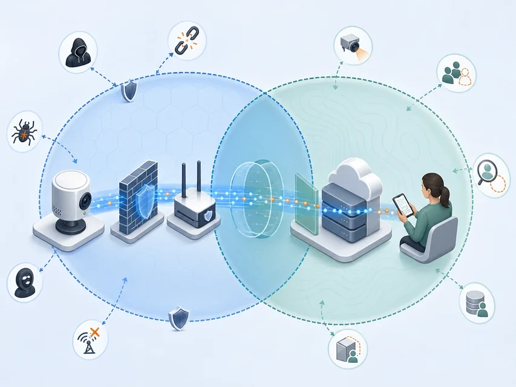
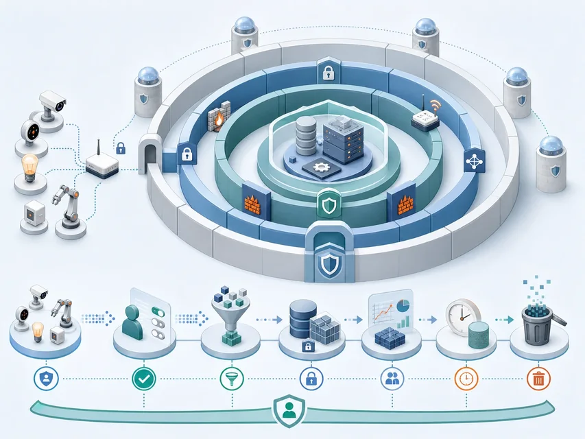

安全
保护设备、网络、数据和服务免受未经授权的访问、攻击、篡改、破坏或中断
关注系统能否可信运行
防止设备被接管、指令被篡改、服务中断和位置被过度收集
 VER. 2608
Built with impress.js
VER. 2608
Built with impress.js
为医疗设备或位置服务写出入口、阻止办法、检查记录、恢复者和申诉对象
安全不等于隐私：加密、认证不替代最小化和用户控制
物理对象、设备／网络、数据／服务与人的生活相互影响
保护设备、网络、数据和服务免受未经授权的访问、攻击、篡改、破坏或中断
关注系统能否可信运行
保护自然人的私密空间、活动和信息，并让个人能控制收集、使用、公开与共享
关注数据是否被合理使用

设备、网络、云、环境和人的操作会互相影响
传感器、标签、手机、网关、云服务与运维接口
大量设备受成本、体积、能耗和更新能力限制
数据、服务和控制可能影响交通、能源、健康与居家生活
信息流示意，不是固定网络流水线 感知／标识 → 网络／计算 → 数据／决策 → 控制／行动
账号、网关或云端任何一处失守，都可能让错误指令到达设备；除了保护数据，还要准备拒绝指令、人工接管和安全停机
| 场景 | 请判断安全／隐私／两者 | 请写受影响的 CIA 属性或隐私问题 |
|---|---|---|
| 摄像头被远程接管 | 填写 | 填写 |
| 位置被过度收集 | 填写 | 填写 |
| 控制指令被篡改 | 填写 | 填写 |
| 服务被压垮 | 填写 | 填写 |
先写谁在操作哪个设备或数据、原本用于什么、出事后影响谁，再选择认证、权限、加密、最小化或恢复措施
同一攻击可能同时破坏多个属性
未经授权的主体不能读取敏感信息
数据和指令不能被未授权修改、插入、延迟、乱序或丢失
授权使用者在需要时能获得信息和服务
CIA 要落到后果：病历被读是机密性问题，读数被改是完整性问题，门锁不响应是可用性问题
恶意固件既改设备，也伪造数据误导应用；还要写发现、回滚和更新负责人
拆解、移动、篡改、弱口令、恶意固件和供应链
窃听、伪造、重放、拒绝服务、横向移动和云配置错误
业务逻辑缺陷、异常数据、控制链操纵和组合失效
威胁建模要写攻击从哪里进来、会读/改/停什么、哪条日志或设备状态能发现它
| 现象 | 请写 CIA 属性 | 请写后果、证据与附加隐私风险 |
|---|---|---|
| 读取健康记录 | 填写 | 填写 |
| 修改传感器读数 | 填写 | 填写 |
| 让门锁无法响应 | 填写 | 填写 |
| 伪造设备位置 | 填写 | 填写 |
安全分析要从“发生了什么”走到“谁因此失去什么能力”
不能只依赖登录密码；设备启动、通信、应用条件和运维监控都要各自检查
控制相互补位：设备加固｜身份与密码｜访问与隔离｜应用校验｜监控与恢复 上方：安全纵深｜横向：运维责任｜下方：隐私生命周期

四组工作可同时发生，不必依次经过；运维人员持续更新、监控和恢复
物理固定、安全封装、可信启动、签名固件、轻量密码和补丁
加密、密钥、身份认证、完整性校验、访问控制和审计
业务逻辑、异常检测、设备关系、危险动作保护和恢复
最小权限、隔离、监控、灰度更新、回滚和事件响应
设备保护物理与启动；信息保护通信与数据；应用保护业务动作；运维持续验证与恢复
不能只写“加密”或“认证”，还要说明保护对象、检查证据和失败处置
用封装、可信启动、密钥保护、定位与远程锁定／清除降低物理风险
用加密、认证、完整性校验、隔离和审计保护传输与存储
信息隐藏或数字水印可以隐藏敏感内容的存在或标记来源，但不能代替加密和完整性校验
| 风险 | 请写控制 | 请写验证证据 |
|---|---|---|
| 设备被拆解 | 填写 | 填写 |
| 弱口令登录 | 填写 | 填写 |
| 固件被替换 | 填写 | 填写 |
| 云端指令误发 | 填写 | 填写 |
测试时要真的尝试弱口令、错误签名固件或误发指令，检查系统是否拒绝、日志是否记录、能否回滚
位置数据可能过细、传输被截获、分析被关联、分享后长期留存或重新识别人
示意路径：最小采集 → 传输／存储 → 受控分析 → 限制共享 回流与退出：缓存／备份／模型输入也要纳入控制；支持撤回、删除与复盘
限制传感器、阅读器、定位和健康模块的访问
加密、认证、访问、保留和备份控制
限制用途、第三方算力和中间结果暴露
控制身份、精度、时间、空间和可关联性
区域推荐只需大致区域，导航才需实时位置；用户应知道用途、期限并能撤回
目的限制、权限、物理阻断与可见告知
加密、密钥、身份认证、完整性和访问记录
分域、脱敏、受控计算和模型输入限制
去标识化／匿名化、模糊、失真、保留期限、撤回和删除
“服务需要数据”不是无限收集和长期保留的理由
| 用途 | 请写最小必要信息 | 请写保护措施 |
|---|---|---|
| 区域推荐 | 填写 | 填写 |
| 路线导航 | 填写 | 填写 |
| 紧急救援 | 填写 | 填写 |
| 长期分析 | 填写 | 填写 |
位置精度、时间范围和身份关联都应按用途最小化，而不是默认收集最细粒度
同态加密、MPC、联邦学习少汇集原始数据，但密钥、更新和输出仍可能泄露
共同目标：不直接汇集各方原始数据；仍要分别检查密钥、更新、输出和参与者身份
在密文上进行特定计算，结果由持钥者解密
多方不公开各自输入，共同计算目标函数
各方本地训练并交换受控更新，原始数据不直接汇出
共享前检查外部资料能否重识别，并按用途限制位置／时间精度和保留期限
移除或替换直接标识，降低与特定个人的直接关联
仍要警惕组合信息和外部数据带来的重识别
扰动数值、降低空间／时间精度，或生成保留统计特性的非真实数据
需要验证分析价值和剩余隐私风险
| 任务 | 请写初步思路 | 请写仍需检查 |
|---|---|---|
| 公开区域趋势 | 填写 | 填写 |
| 医院联合训练 | 填写 | 填写 |
| 云端敏感统计 | 填写 | 填写 |
| 位置推荐 | 填写 | 填写 |
选择技术时要写清不想暴露哪份原始数据、谁可能看到、输出还泄露什么，以及降低精度会不会让服务失效
医疗设备先保证临床接管和安全恢复；位置服务要处理过度收集、删除和申诉
资产／数据 → 风险与目的 → 控制与证据 → 响应／恢复 通知、申诉与责任复盘
设备控制、患者信息、医院网络和远程维护必须分层保护
精确位置支撑服务，同时可能暴露家庭、工作和行为规律
谁登录、能看什么、网络怎样隔离、数据是否加密、谁更新、谁接管、日志在哪、怎样恢复
案例评价要说明攻击是否被拦住、收集是否超过用途、服务中断后谁接管、用户何时获知并向谁申诉
用错误固件、中断或泄露检查日志、回滚、通知和申诉，不能只列功能
01资产／用途 → 风险 → 控制／最小化 → 证据 → 响应／恢复／申诉哪台设备／哪份数据／哪个服务／影响谁
谁能登录和访问／怎样隔离加密／怎样签名更新／少收什么
当前版本／权限记录／输入输出／异常日志／用户选择
谁告警和接管／怎样回滚恢复／通知谁／怎样删除和申诉
| 阶段 | 请写关键控制 | 请写需要复核 |
|---|---|---|
| 部署 | 填写 | 填写 |
| 使用 | 填写 | 填写 |
| 维护 | 填写 | 填写 |
| 事件 | 填写 | 填写 |
上线前要写清设备怎样拒绝危险动作、医护怎样接管、运维怎样回滚，以及每一步由谁执行
以远程生命体征服务证明：出事时能限损、恢复并回应个人